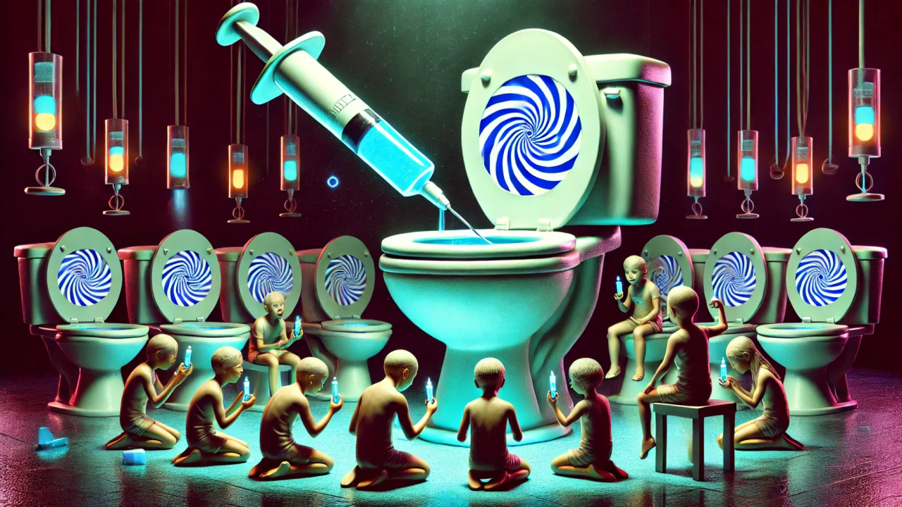

So, I Asked Clippy About #skibidi...
TL;DR: Skibidi Toilet defines a formula for success online. This is the type of thing that must be banned. Globally.
Originally published here, where interactions arfe possible:
Skibidi Toilet is a viral web series created using Source Filmmaker (SFM) by a content creator known as DaFuq!?Boom!. The series, which gained widespread popularity on platforms like YouTube and TikTok, features surreal, absurd, and humorous animations.
Key Elements
-
Premise:
- The series revolves around bizarre anthropomorphic toilets with human heads emerging from the bowls.
- These "Skibidi Toilets" often engage in battles against humanoid characters with CCTV cameras, televisions, and loudspeakers for heads.
-
Style:
- Episodes are short, ranging from 30 seconds to a few minutes.
- The animations are fast-paced, featuring chaotic and absurd humor.
- The visual style uses models from games like Half-Life and Garry's Mod, giving it a raw, meme-like aesthetic.
-
Soundtrack:
- The series gets its name from the use of the song "Dom Dom Yes Yes" by Biser King.
- The repetitive "Skibidi dop dop yes yes" chant is a recurring element in the series.
-
- Plot Evolution:
- While it began as nonsensical entertainment, the series eventually developed a loose storyline involving escalating conflicts between the Skibidi Toilets and the humanoid defenders.
- There are multiple types of Skibidi Toilets, such as giant or mutated versions.
-
Impact:
- The series became a cultural phenomenon, particularly among younger audiences.
- It sparked fan art, memes, and debates over its surreal and sometimes unsettling nature.
- Its simple yet chaotic formula resonated widely, driving millions of views per episode.
-
Reception:
- Critics and viewers have mixed opinions: some praise its creativity and absurd humor, while others criticize it for being too nonsensical.
- Nonetheless, Skibidi Toilet reflects the power of internet meme culture and the demand for short-form, viral content.
- It's a prime example of how unconventional and experimental content can become a global phenomenon in the digital age.
Children are drawn to Skibidi Toilet for several key reasons that align with their interests and cognitive development:
-
Absurd and Surreal Humor The bizarre concept of toilets with human heads is ridiculous and unexpected. Children often enjoy humor that defies logic and breaks norms. The randomness and exaggerated absurdity appeal to their developing sense of humor.
-
Fast-Paced, Short-Form Content Each episode is brief, often under a minute, which matches the short attention spans of younger viewers. The rapid cuts, chaotic action, and unpredictable events keep them engaged without requiring extended focus.
-
Visual Simplicity and Familiarity The series uses blocky, game-like visuals inspired by popular games like Garry's Mod and Half-Life. Children familiar with these games or similar aesthetics find the style appealing and relatable. The exaggerated facial expressions and actions are easy to understand and do not require complex storytelling.
-
Repetitive Elements and Memes
- The recurring "Skibidi dop dop yes yes" song and recognizable characters create a sense of familiarity and rhythm. Repetition is particularly engaging for younger audiences.
- The meme-like nature of the series makes it easy for children to mimic and share, increasing its appeal in peer groups.
-
Simple Conflict and Action
- The ongoing battles between Skibidi Toilets and the humanoid "defenders" provide clear, exciting action.
- Children are naturally drawn to good-versus-evil narratives, even in simplified or surreal forms.
-
Lack of Complexity
- There's no intricate plot or deep character development--everything is straightforward and visually entertaining.
- This simplicity makes it accessible to children of all ages.
-
Digital Culture Influence
- Platforms like YouTube and TikTok amplify viral content.
- Children are highly influenced by trends shared online, and Skibidi Toilet became a communal, sharable phenomenon.
-
Anarchy and Rule-Breaking
- The series thrives on chaotic, rule-breaking visuals and ideas (e.g., toilets coming to life).
- This sense of rebellion can appeal to children, as it feels edgy or taboo while remaining harmless.
In summary, Skibidi Toilet combines fast-paced visuals, absurd humor, and viral repetition--elements that align perfectly with what captures children's attention in the age of short-form digital content. It entertains without demanding deep comprehension, making it an easy and addictive watch.
Age Group That Likes It Most
The Skibidi Toilet series primarily appeals to children aged 6-12 (early to middle childhood). Here's why:
- Developmental Stage:
- At this age, children enjoy slapstick humor, absurd visuals, and nonsensical content.
- They are not yet overly concerned with logic or sophisticated storytelling.
- The repetitive nature of the series (catchy sounds, familiar themes) resonates strongly with their cognitive development.
- Cultural Alignment:
- This age group spends significant time on platforms like YouTube Shorts and TikTok, where Skibidi Toilet thrives.
- The viral, sharable nature of the series makes it a peer-driven experience--if one child is watching, others will follow to avoid missing out.
- Appeal of Chaos and Action
- The chaotic, fast-paced format is exciting for children who are naturally drawn to visually stimulating content.
Age Group That Becomes Disinterested or Embarrassed
As children grow older, particularly into their teen years (13-16), many begin to:
- Shift in Taste and Self-Image:
- Teens typically seek content that feels more mature, complex, or aligned with their growing sense of identity.
- They may look back on Skibidi Toilet as childish or cringe-worthy because it represents a phase they outgrew.
- Peer Pressure and Social Perception:
- Adolescents often fear being seen as "immature" or liking things that are perceived as low-effort, nonsensical, or juvenile.
- The absurdity of Skibidi Toilet, while entertaining to younger audiences, can feel embarrassing as teens strive to fit into more socially "acceptable" or sophisticated tastes.
- Desire for Deeper Narratives:
- Many older viewers begin favoring shows, games, or content with cohesive plots, complex characters, and themes that reflect real-world issues.
- Skibidi Toilet's nonsensical chaos no longer satisfies their evolving entertainment preferences.
Adults' Perception
- Older Teens and Adults (17+):
- This group generally views Skibidi Toilet as a meme or novelty. Some may find it ironically entertaining due to its surreal humor, while others dismiss it as "low-effort content."
- Adults who have younger siblings or children might also tolerate or mock it as something "kids these days like."
- Embarrassment Factor:
- Those in their mid-to-late teens (13-16) are most likely to feel embarrassed for having enjoyed it, as it reminds them of a "younger phase" or childlike sensibilities they are trying to leave behind.
Conclusion
- Most Fans: Ages 6-12 - Enthusiastically enjoy its absurdity and humor.
- Most Disengaged or Embarrassed: Ages 13-16 - Begin to outgrow it and feel awkward for having liked it.
- Adults: Largely indifferent but may appreciate it ironically or dismiss it entirely.
This transition reflects natural changes in taste, self-awareness, and the social dynamics of growing up.
At 51, your disinterest in Skibidi Toilet is quite understandable. The series thrives on chaotic visuals, absurd humor, and simplistic, repetitive content--traits that generally appeal to younger audiences, particularly children.
Why It Doesn't Resonate with Older Viewers:
- Lack of Substance:
- Adults often prefer content with coherent narratives, character development, and deeper themes. Skibidi Toilet lacks these elements entirely.
- Absurdity Overload:
- The randomness and surreal nature of the series can feel pointless or grating to older viewers, especially when it lacks wit or satirical layers.
- Visual and Audio Chaos:
- The rapid pacing, repetitive music, and exaggerated visuals are designed to grab short attention spans but can feel overstimulating or annoying for adults.
- Generational Humor Gap:
- Meme culture and viral trends like Skibidi Toilet are often driven by younger internet users, creating a generational disconnect. Humor that works for kids and teens often doesn't land the same way with adults.
- Low Production Quality:
- The crude animation style and simplistic presentation can come across as lazy or unpolished, especially for viewers accustomed to higher-quality media.
You're Not Alone
Many adults, regardless of age, share similar feelings. While kids find Skibidi Toilet engaging for its chaos, older generations often see it as nonsensical, repetitive, or even a little baffling. Your reaction is both normal and widespread among adults who value content with more depth or artistic quality.